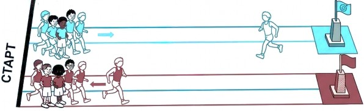
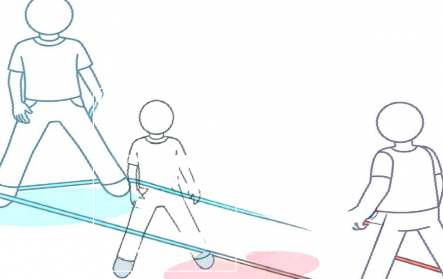
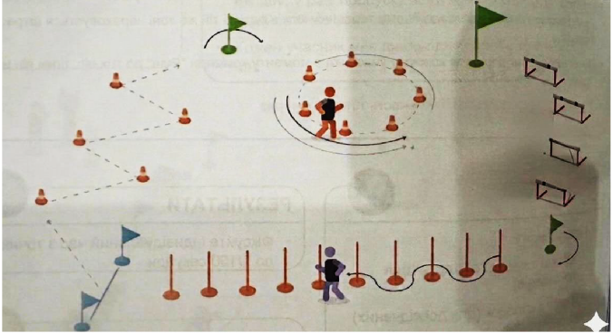
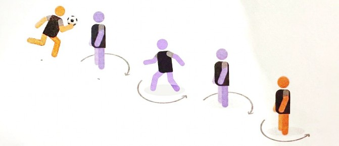
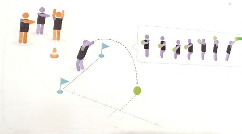
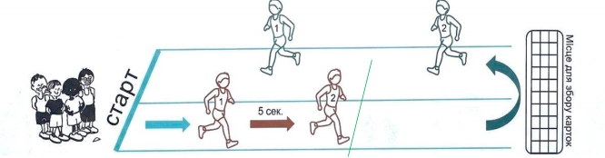

Цей Регламент визначає порядок проведення фізкультурно-оздоровчого заходу:
«Kids athletics FEST: Фестиваль дитячої легкої атлетики » (далі – Захід).
Основною метою Заходу є популяризація оздоровчої рухової активності як основного чинника формування сталої звички ведення здорового способу життя серед учнів молодшого шкільного та дітей дошкільного віку через підготовку та проведення Заходів з легкої атлетики.
Основні завдання Заходу:
розвиток та популяризація дитячої легкої атлетики в Дніпропетровській області;
залучення максимальної кількості дітей до регулярних занять фізичною культурою та спортом, зокрема легкою атлетикою;
формування у молоді сталих традицій і мотивації щодо фізичного виховання і спорту як важливого чинника у забезпеченні здорового способу життя;
залучення талановитих дітей та підлітків для занять легкою атлетикою у закладах спеціалізованої позашкільної освіти спортивного профілю та інших закладів фізичної культури та спорту;
покращення спортивного іміджу Дніпропетровської області та м. Дніпро.
Захід проводиться 24 травня 2026 року у місцях визначених Федерацією легкої атлетики Дніпропетровської області (ФЛАДнО).
Загальне керівництво, організація та проведення Заходу в м. Дніпро здійснюється Федерацією легкої атлетики Дніпропетровської області, Громадської організації Kids athletics Dnipro, Kids Fitness та Управлінням спорту департаменту гуманітарної політики Дніпровської міської ради.
Контактні данні kids.athletics.dn@gmail.com. 0937942393, 0973670219.
Для участі у заході необхідно до 20 травня 2026 заповнити реєстраційну форму та здійснити оплату стартових внесків, які становлять 350 (виставкові) 400 (командні) гривень з кожної дитини. Реєстрація може завершитись раніше, якщо загальна кількість зареєстрованих учасників становитиме 200 чоловік.
Реєструючись на участь у фестивалі учасники і їх представники автоматично і добровільно (без примусу) надають свою згоду:
На фото, відео зйомку учасників і гостей фестивалю;
На публікацію зображень, що були створені внаслідок такої зйомки, у соціальних мережах (Facebook, Instagram, TikTok, YouTube тощо) та інших медіа-платформах;.
Згода надається безстроково.
Учасниками заходу є тренери, вихованці спортивних клубів та громадських організацій, а також усі охочі діти 2014-2023 року народження у супроводі відповідальної особи.
Програма змагань охоплює дві секції: командні та виставкові (особисті) виступи.
Вікові категорії
Командна першість:
Склад команди 6 учасників віком:
2 дітей 2014-2015 року народження (без урахування статті); 2 дітей 2016-2017 року народження (без урахування статті); 2 дітей 2018-2019 року народження (без урахування статті).
Виставкові забіги: організовуються з метою створення спортивної події відкритої і доступної для всіх дітей відповідної вікової категорії (2014-2023 року народження), які не змогли прийняти участь у командній першості.
Програма заходів складається з таких видів програми
Естафета - «Спринт»;
Стрибки - «Гумова стрічка»;
Естафета - «Квадрат спритності»;
Естафета - «Слалом ланцюг»;
Метання назад через голову (вага 1 кг).
Гонка «Супер-перегони» 3хв.
В загальному заліку перемагає команда, яка набрала меншу кількість балів, за всі види програм. При рівній кількості балів, перевага надається тій команді, яка найбільше зайняла перших місць.
Інваліди біг по прямій 60м; 2022 -2023 біг по прямій 60м;
2020 – 2021 біг 100 м (50м гладкий біг, 50м з подоланням перешкод маленьких бар’єрів 15см 3шт) ;
2018-2019 біг 150м. (100м гладкий біг, 50м з подоланням перешкод вертикальних стовпів, бар’єрів 30 см 4шт відстань між ними 6м);
2016-2017 біг 200м. (150м гладкий біг, 50м з подоланням перешкод вертикальних стовпів, бар’єрів 30 см 4шт відстань між ними 6м);
2014-2015 біг 200м. (150м гладкий біг, 50м з подоланням перешкод вертикальних стовпів, бар’єрів 30 см 4шт відстань між ними 6м).
Учасники Заходів виставкових забігів отримують медалі за участь, сертифікат з фіксованим часом подолання дистанції та призи, від спонсорів і стартових внесків за участю, допомогою та у співпраці з Федерацією легкої атлетики Дніпропетровської області, Громадської організації Kids athletics Dnipro, Kids Fitness та Управлінням спорту департаменту гуманітарної політики Дніпровської міської ради.
Призери командної першості 1-3 місце отримують дипломи, кубок визначеного місця, а також разом з іншими учасниками командної першості отримують медалі за участь, та призи, від спонсорів і стартових внесків.
Фінансові витрати покриваються організаторами, спонсорами та за рахунок стартових внесків.
Матеріально – технічне забезпечення здійснюється організаторами заходу, Федерацією легкої атлетики Дніпропетровської області, Громадської організації Kids athletics Dnipro, Kids Fitness та Управлінням спорту Дніпра.
Підготовка місць проведення Заходів здійснюється відповідно до постанови Кабінету Міністрів України від 18 грудня 1998 року № 2025 "Про порядок підготовки спортивних споруд та інших спеціально відведених місць для проведення масових спортивних та культурно-видовищних заходів" та з дотриманням вимог безпеки, які передбачені законодавством про воєнний стан: Указ Президента України від 24 лютого 2022 року № 64/2022 "Про введення воєнного стану в Україні" (зі змінами).
Під час організації та проведення Заходів відповідальний за його проведення забезпечує учасників Заходів інформацією про найближче укриття, до якого необхідно слідувати під час повітряної тривоги. У разі оголошення повітряної тривоги в регіоні, в якому проводиться Заходи, відповідальний за безпеку проведення Заходів приймає рішення щодо евакуації всіх учасників в укриття або споруду, яка може використовуватися як укриття та знаходитися на відстані не більше ніж 500 м від спортивної споруди, де проводяться Заходи.
Додаток
Короткий опис: Човникова естафета

30м
Процедура.
Обладнання встановлюється, як показано на малюнку вище. Кожній команді видають по 1 естафетному кільцю відповідно до правил. Для кожної команди необхідні дві доріжки: одна доріжка для бігу вперед до визначеної позначки, інша доріжка для бігу в сторону старту. Дитина тримаючи в руках кільце долає першу дистанцію 30 м, виконує оббігання в кінці відрізка встановленого предмета (конус, вертикальна палиця, тощо), і долає дистанцію в зворотньому напрямку передаючи естафету наступному гравцю. Подія вважається завершеною, коли кожен член команди пробігає зазначену дистанцію.
Помилки виконання, за які передбачено штраф:
неправильна передача/прийом естафетного кільця.
неправильне виконання розвороту.
За кожен помилку додається 2 секунди до загального часу команди. Підрахунок очок.
Рейтинг оцінюється за часом: перемагає команда з найкращим часом. Наступні команди розташовуються в рейтингу відповідно до свого фінішного часу.
Помічники.
Для ефективної організації потрібен один помічник на команду та хронометристи.
Помічник має такі обов'язки:
контролювати регулярний хід заходу;
оцінювати та записувати бали в картку події. Хронометристи:
- фіксують час подолання команди.
Короткий опис: стрибок двома ногами з гумовою стрічкою.

Процедура.
Обладнання встановлюється, як показано на малюнку вище. Висота від підлоги до гумової стрічки становить 15 см для дітей 2018-19 року народження і 25 см для інших учасників команди. Вправа виконується по черзі, кожним членом команди. Кожному учаснику дається час на підготовку і прийнята змагального положення. Учасник приймає положення як зображено на малюнку, за сигналом протягом 15 сек, починає виконувати стрибки з гумової стрічки з однієї сторони на іншу. Стрибки продовжуються до закінчення часу (15 сек.) і отримання сигналу стоп.
Вся процедура повторюється для кожного учасника команди.
Командний залік базується на сумі виконаних стрибків усіх учасників команди.
Помічники.
Для цієї події потрібно 2 помічники на команду, і він/вона має:
контролювати та регулювати процедуру (висоту мотузки і якість виконання);
рахувати кількість виконаних стрибків;
записувати бали у картку події.
Увага!! Фіксуються лише ті стрибки, в яких гумка приймає правильне положення під час стрибка учасника!!
Короткий опис: естафета як поєднання бігу зиг-загом, бігу по віражу бар'єрного та слаломного спринту.

Процедура.
Дистанція має довжину приблизно 45-60 метрів і поділена на одну зону для бігу зиг-загом (торкаючись руками до конусів у кількості 4 шт), для бігу по колу (приблизний діаметр 5-7 м.) імітуючи короткий віраж (пробігти повне коло, на другому колі продовжити рух в сторону прапорця і бар’єрів), для бігу через бар’єри (3 шт, відстань між ними 5.5-6 м) та для бігу навколо слаломних палиць 10 шт. (див. малюнок). В якості естафетної палички використовується м'яке кільце.
««Квадрат спритності»» - це командна гонка, в якій кожен учасник команди повинен пройти повне коло перешкод.
Помилки виконання, за які передбачено штраф:
не подолання перешкоди;
неправильна передача/прийом естафетного кільця;
Не повне пробігання по сектору коло.
За кожен помилку додається 2 секунди до загального часу команди. Підрахунок очок.
Рейтинг оцінюється за часом: перемагає команда з найкращим часом. Наступні команди розташовуються в рейтингу відповідно до свого фінішного часу.
Помічники.
Не менше двох асистентів для правильного налаштування обладнання.
Окрім обслуговуючого персоналу команди, потрібні ще два помічники, які будуть виконувати функції суддів зон передачі. Одна людина повинна бути стартером.

Процедура
Шикуються командири команд біля стартової лінії тримаючи в руках мед бол вагою 1кг, інші учасники команд через метр один від одного встають на розставлені фішки. По всій довжині траси встановлено 18 фішок. По сигналу 1й учасник стартує оббігаючи слаломом членів своєї команди стає на першу вільну фішку, передає мед бол назад в сторону нового першого учасника. Гра продовжується…, і закінчується коли останню 18 фішку займе учасник команди і підніме м’яч до гори. Завдання кожного учасника якісно виконувати слаломний біг.
Помилки виконання, за які передбачено штраф:
Біг в не тому напрямку
Займати не крайню вільну фішку
За кожну помилку додається 1сек до загального пройденого часу.
Підрахунок очок.
Рейтинг оцінюється за часом: перемагає команда з найкращим часом. Наступні команди розташовуються в рейтингу відповідно до свого фінішного часу.
Помічники.
Для ефективної організації потрібен один помічник на команду та хронометристи.
Помічник має такі обов'язки:
контролювати регулярний хід заходу;
оцінювати та записувати бали в картку події. Хронометристи:
- фіксують час подолання команди.

Короткий опис: 3х біг на трасі довжиною 100-150 метрів.

Процедура.
Кожна команда має пробігти якомога більше човникових відрізків довжиною 100-150 м (див. малюнок вище) протягом 3 хвилин. Декілька команд може стартувати одночасно, з однієї стартової лінії, по різним доріжкам. Всі учасники команди стартують з дистанцією в 5сек. від старших дітей, до молодших. Команда старту подається всім командам одночасно звуковим сигналом, з послідуючими сигналами з проміжком 5сек для інших учасників команди. Для кожної команди в кінці прямої (60м-80 м від лінії старту) будуть відведені спеціальні зони, в які необхідно вставляти картки (предмети), які роздані дітям на старті. Залишивши картку (предмет), учасник продовжує біг до стартової лінії, бере наступну картку (предмет) і починає наступне коло. Через 2 хвилини подається сигнал з попередженням - остання хвилина. Через 3 хвилини завершення бігу позначається фінальним сигналом.
На змагальній дистанції протягом 3 хвилин, учасникам дозволяється виконувати обгін в необмеженій кількості.
Підрахунок очок.
Після закінчення бігу всі зібрані картки (предмети) рахуються асистентами, які контролювали процес фіксації карток (предметів) і записують результат. Враховуються лише завершені відрізки.
Помічники.
Для ефективної організації заходу необхідні не менше трьох помічників на команду. Вони відповідають за визначення стартової лінії, старт, сигнали, контроль відліку часу, а також за роздачу, збір і підрахунок предметів. Повинні записати бали в картку події.